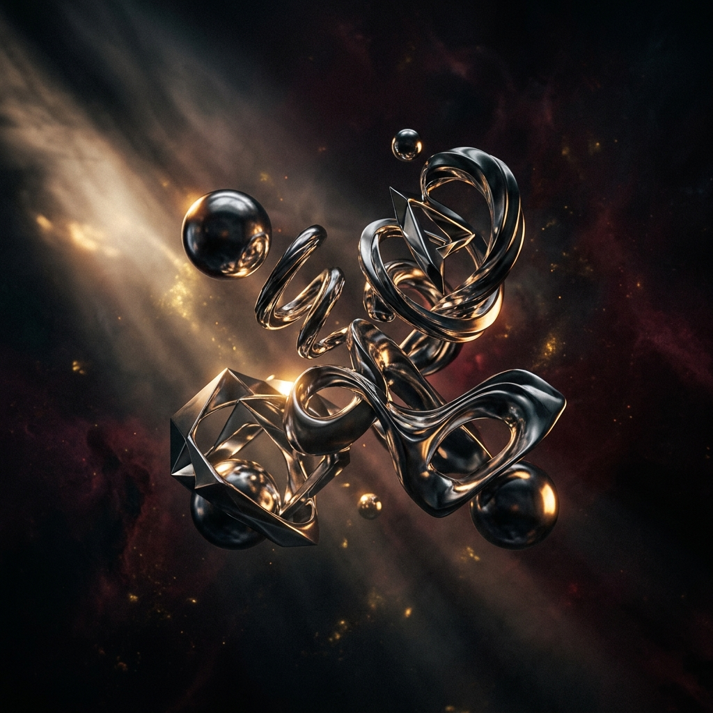

Creative Direction
A visual exploration of creative direction that pushes boundaries between light and shadow. This series captures the essence of transcendence through bold compositions and atmospheric storytelling.

Ethereal light study — capturing the moment between dusk and darkness
Detail study I — Atmospheric layers
Detail study II — Light refraction
Panoramic composition — The journey from shadow to illumination